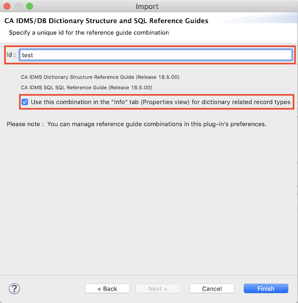

IDMSNTWK
The IDMSNTWK schema defines the (logical) structure of an IDMS dictionary and the official IDMS documentation
contains a diagram for it. Together with that diagram you'll need the Dictionary Structure Reference Guide
and possibly also the SQL Reference Guide if you want to access the records and sets directly in your own
tooling or reports or just want to understand the internals of IDMS dictionaries.
I've been using the above combination for numerous years while building tools and reports that needed programmatic
access to our dictionaries.
The diagram editor offers an interactive way to explore the IDMSNTWK schema by providing a ready-to-use
diagram (Release 19.0) and the
functionality that allows you to import selected chapters from the following IDMS manuals :
- The Dictionary Structure Reference Guide
- The SQL Reference Guide
Save the IDMSNTWK diagram in a project in your Eclipse workspace and you can immediately start exploring the IDMSNTWK
schema using the diagram editor (you will NOT have the record and table descriptions available in the Properties view
yet).
To enjoy the full interactive experience, import the above mentioned manuals into your workplace using the
provided import wizard. You can start this wizard either via the
Preferences dialog's IDMSNTWK section or via the
File/Import... menu item:
On the first wizard page, select the Dictionary Structure Reference Guide manual; you'll see the document title when it
was successfully processed :
On the next wizard page, select the SQL Reference Guide manual; you'll see the document title when it
was successfully processed :
On the final wizard page (and unlike the example below), give your manual combination a useful name and indicate if you
would like it to be used in the Properties view when viewing the IDMSNTWK diagram; if this is your first manual
combination, you would normally check this option :

Important remark : currently, only the following manual versions will be accepted by the import wizard :
- r16 SP2
- r17
- Version 18.0.00
- Release 18.5.00
- Release 18.5.00, 2nd Edition
Imported manuals can be managed via the Preferences dialog;
select the combination you want to be used when exploring the IDMSNTWK schema, import a new manual combination or remove
an obsolete manual combination :
![[preferences IDMSNTWK buttons]](../images/preferences_IDMSNTWK_buttons.png)
From now on, whenever you view the IDMSNTWK diagram (more precisely any schema named IDMSNTWK with its version
equal to 1) and select a record type, you will have the record (or table) information from the imported
IDMS manuals at your disposal in the Properties view (Info tab) :